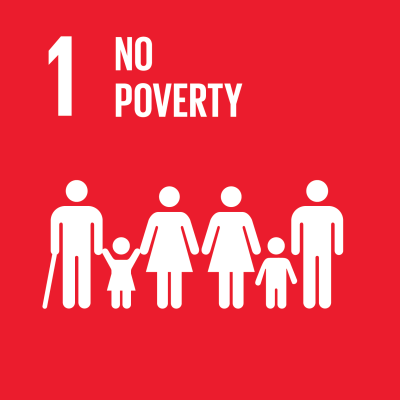

Welcome to the Contents Page by Student 2

Poverty
Poverty is the state of being extremly poor and lacking resources to be able to have a decent standard of living.
Poverty affects billions of people worldwide, hindering their access to adequate food, shelter, healthcare, education, and economic opportunities.
Global Perspective:
Poverty exists in various forms across different regions, with disparities in income levels, access to resources, and socio-economic conditions.
Poverty is what ultimately leads to

Causes of Poverty
Lack of Education: Limited access to quality education contributes to a lack of skills and opportunities, trapping individuals in low-paying jobs or unemployment.
Unemployment: High unemployment rates, particularly in marginalized communities or during economic downturns, exacerbate poverty by reducing household income.
Economic Factors: Structural inequalities, uneven distribution of wealth, and systemic barriers perpetuate poverty by limiting economic mobility and perpetuating wealth disparities.
Social Factors: Discrimination, social exclusion, and intergenerational poverty cycles further marginalize vulnerable populations, hindering their ability to escape poverty.
Political Factors: Inadequate governance, corruption, and ineffective policies can perpetuate poverty by failing to address underlying socio-economic issues and protect vulnerable communities.

Global Initiatives to tackle Poverty
UN Sustainable Development Goal 2:
To acheive Zero Hunger by 2030
International Collaborations: Highlighting global partnerships and initiatives aimed at addressing poverty and hunger on a larger scale, fostering cooperation to achieve sustainable development goals.
Localised Solutions: Emphasising the importance of community-based approaches and grassroots movements in combating poverty and hunger, promoting inclusive and sustainable solutions at the local level.
Progress taking place:
Despite the persistent challenges, progress is being made in the fight against poverty. Efforts by governments, organisations, and communities worldwide have led to
significant improvements in various aspects of poverty alleviation.
Extreme Poverty is defined as those living on less than $2.15 per day.
In recent years, there has been a decline in the global poverty rate.
According to the World Bank, the global extreme poverty rate fell to a record low of 9.2% in 2022, down from 10.7% in 2019.
This means that approximately 648 million people are still living in extreme poverty, but the trend is moving in the right direction.
More people have gained access to essential services such as education, healthcare, and clean water. The United Nations reports that between 2015 and 2022, the proportion of the population with access
to basic sanitation services increased from 69% to 74%.
Economic growth and development programmes have helped create jobs and improve livelihoods for many individuals and families living in poverty.
The International Labour Organization (ILO) estimates that between 2015 and 2022, around 173 million people were lifted out of working poverty, meaning they no longer earn below the poverty line.